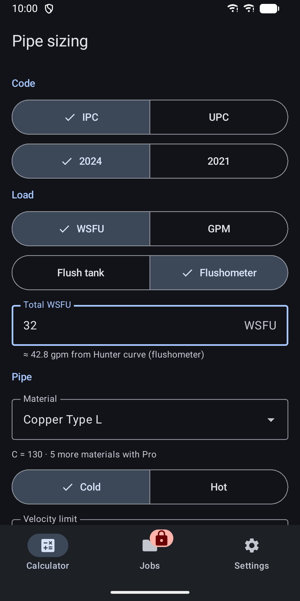

Rohrdimensionierung IPC & UPC
Wasserrohre nach WSFU oder GPM bemessen: Geschwindigkeit und Druckverlust





Über die App
Pipe Sizing dimensioniert Trinkwasserleitungen. Geben Sie die Summe der Anschlusswerte (WSFU) oder den Durchfluss in Gallonen pro Minute (GPM) ein, wählen Sie das Material und erhalten Sie die empfohlene Nennweite mit Strömungsgeschwindigkeit und Druckverlust. Die App funktioniert ohne Verbindung, braucht kein Konto und läuft auf Smartphone und Tablet. Entwickelt für US-Installateure, Auszubildende, Kalkulatoren und alle, die sich auf die Installateurprüfung vorbereiten. Es gelten US-Einheiten. Die App ist auf Englisch. DAS KANN DIE APP - Empfiehlt die kleinste Nennweite von 1/2 bis 4 Zoll, die die Geschwindigkeitsgrenze einhält. - Zeigt Geschwindigkeit in Fuß pro Sekunde und Druckverlust in psi pro 100 ft für jede Größe in einer kompakten Tabelle. - Berechnet den Gesamtdruckverlust einer geraden Leitung, wenn Sie eine Länge eingeben. - Unterstützt IPC und UPC, Ausgaben 2024 und 2021, mit den Abschnittsnummern zu jedem Ergebnis. - Rechnet WSFU mit der gemeinfreien Hunter-Kurve in GPM um, für Spülkasten oder Druckspüler. - Nutzt Hazen-Williams mit C-Werten für die Auslegung und veröffentlichte Innendurchmesser. - Setzt Standardgrenzen für die Geschwindigkeit nach Norm oder nach Herstellerangaben, wenn die Norm keine nennt. Herstellerangaben sind klar als nicht normativ gekennzeichnet. Sie können die Grenze ändern und auf den Standard zurücksetzen. - Wechselt die Standardgrenze zwischen Kalt- und Warmwasser. - Weist darauf hin, wenn die empfohlene Größe unter einem Mindestmaß der Norm liegt, etwa bei einer 3/4-Zoll-Hausanschlussleitung. - Zeigt Ihre letzte Berechnung in einem Widget auf dem Startbildschirm. OHNE KAUF ENTHALTEN - Rechner für einen einzelnen Abschnitt. - Kupfer Typ L und PEX. - Ihr letztes Ergebnis bleibt gespeichert und erscheint im Widget. PRO, EINMALIGER IN-APP-KAUF - Gespeicherte Aufträge: Auftrag benennen, Norm, Ausgabe und Spültyp einmal festlegen und dann jeden Abschnitt mit eigenem Material, eigener Temperatur und eigener Geschwindigkeitsgrenze bemessen. Der Druckverlust wird je Abschnitt angezeigt. Eine Summe für den Auftrag gibt es nicht. - Fünf weitere Materialien: Kupfer Typ K und M, CPVC (CTS), PEX-AL-PEX und PE-RT. - Nach dem Kauf funktioniert Pro ohne Verbindung. Den Kauf können Sie auf dem Freischaltbildschirm wiederherstellen. DATENSCHUTZ - Kein Konto und keine Analyse. - Ihr letztes Ergebnis und Ihre gespeicherten Aufträge bleiben auf Ihrem Gerät. - Die Cloud-Sicherung ist abgeschaltet. - Die App fordert keine Internetberechtigung an. Nur Google Play wickelt den Kauf ab. BARRIEREFREIHEIT - Helles und dunkles Design nach Systemeinstellung. - Beschriftungen für Screenreader, Größen in Worten gesprochen und große Bedienflächen. WICHTIG Die Werte werden aus gemeinfreien Daten berechnet und können leicht von gedruckten Normtabellen abweichen. Die App ist ein Nachschlagewerkzeug. Sie ersetzt weder die geltende Norm noch die zuständige Behörde. Formstücke, Wasserzähler, Höhenunterschiede, Netzdruck sowie staatliche oder örtliche Änderungen sind nicht enthalten. Mindestgrößen der Norm werden angemerkt, aber nicht erzwungen.